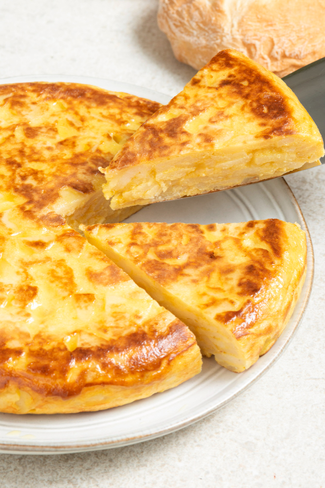

Spanish Tortilla

Designed by Freepik
Description
This is a simple traditional dish if you like spanish cuisine.
Ingredients
- 750g Potatoes
- 8 Eggs
- 1 Onion
- Olive Oil
- 1 1/2 teaspoon Salt
- 1/2 teaspoon Pepper
- 80g Manchego-Cheese
Steps
- Preheat the oven to 180 degrees (top and bottom heat).
- Peel off the skin of the potatoes and onions and cut them into thin slices.
- Put some olive oil into an oven-safe pan and steam the onions for 3 minutes until they are glisten - after that put them into a bowl.
- Now, put the potatoes into the pan with some olive oil and fry them 10 minutes until they are soft.
- Sprinkle the salt and pepper on the potatoes, mix it and put them into a second bowl.
- Stir the eggs in a separate bowel, add the potatoes and onions and mix it together.
- Put half of the mass into the hot pan. Keep in mind that everything in the pan needs to be flat.
- Spread the cheese over the potatoes and onions in the pan.
- Let it fry for 10 minutes nut do not turn it.
- Put the pan into the preheated oven and bake it for 30 minutes. There should be a nice golden crust.
- Let it cool down for 5 minutes and cut it into 6 - 12 pieces. Enjoy the meal!
Odin Recipes